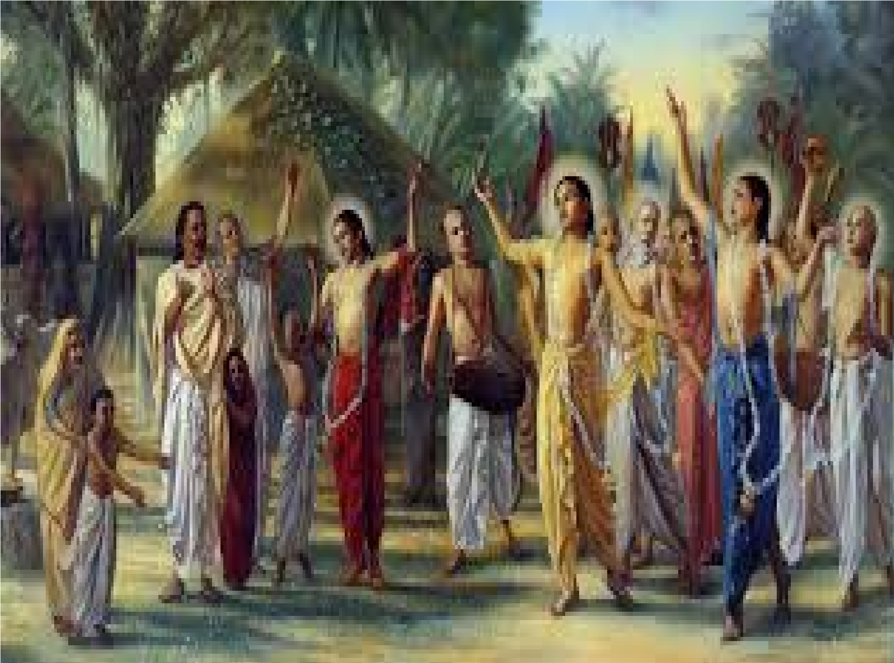

CULTURE OF INDIA
Emergence of new regional cultures
- Development of Regional Languages
- Urdu, Hindi- North India
- Malayalam- Kerala
- Marathi- Maharashtra
- Punjabi- Punjab
- Telegu- Andhra pradesh
- Bangla- West Bengal
- Odiya- Odisha
- Rajasthani- Rajasthan
- Local Socio-religious Culture
- Jagannath Cult- Odisha
- Jauhar- Rajasthan
- New Dance Forms
- Bharatanatyam- Tamil Nadu
- Kathakali- Kerala
- Kuchipudi- Andhra Pradesh
- Odissi- Odisha
- Kathak- North India
- Art of miniature paintings
- Rajputana School- Rajasthan
- Kangra School- Himachal Pradesh

Click here for more information